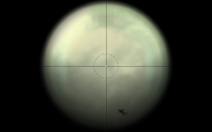
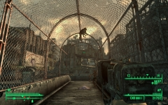

Hmm?

Hmm?
Oh look, Protectron! Wtf?
Kung-fu dog
Looks like level glitch - jump on some tubes, then on some boxes, and you can use computer in another mid-jump without unlocking the door to it
Charon just cannot exit buildings normally

If you shoot mutant on the ladder and it stays in more-or-less one piece, and falls on his back, he will crawl down by stepping from step to step... on his ass. Unfortunately, no game video, but I made a sequence out of screenshots.
Video; Source shots